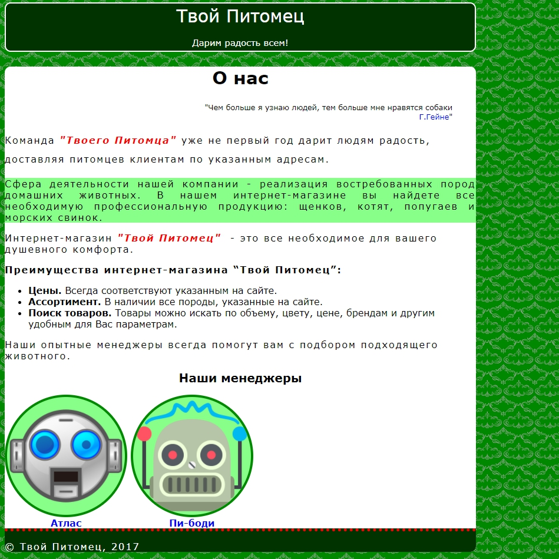

Домашнее задание по теме CSS (1)
Сверстать страницу по макету:

Указания по выполнению задания
- проект состоит из одного файла index.html и папок с подключаемыми файлами img и css. В папке css один файл со стилями style.css
- макет фиксированной ширины 800px
- должны быть использованы теги header, main, footer, blockquote, h1-h2
- кавычки до и после цитаты задаются с помощью псевдоэлементов
- цвета нужных элеметнов получаем из макета с помощью пипетки
Скачать материалы для верстки